hand-pinching-chip
Curved the lower thumb-to-arm stroke while retaining the processor pins and pinch.


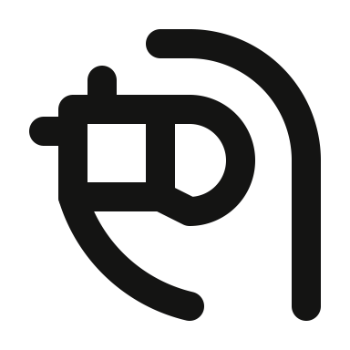
48px preview
Nineteen fresh revisions have changed geometry and pass the SOLO48 validator and build gate. Production still shows the earlier submission until each icon is disapproved and claimed again. The hazard triangle already has a changed production drawing.
Curved the lower thumb-to-arm stroke while retaining the processor pins and pinch.

Moved the finger toward the price display while retaining the monitor, stand, and dollar.


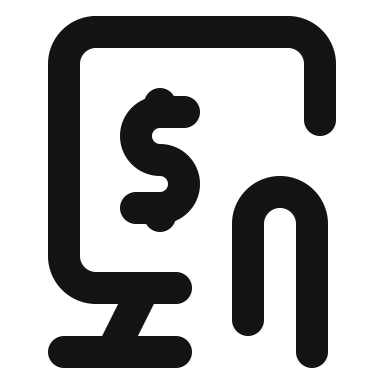
Rebuilt the dome and lowered the palm to fit two visible air marks with legal clearance.

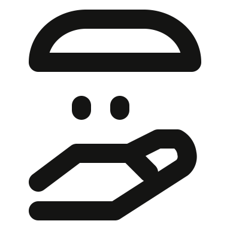
Curved and rebalanced both thumbs around the sphere.

Narrowed both B bowls to strengthen the Bitcoin shape.

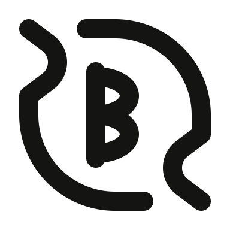
Opened the matching thumb grips and moved the document mark into a clearer position.


Adjusted its arc to flow into the diagonal support.
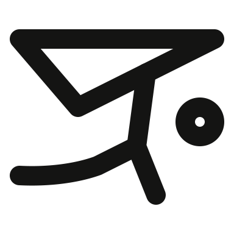
Added a readable perforation stroke on the sheet.

Rebalanced the lower handle edge while retaining the flared blade.

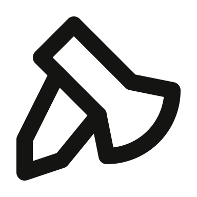
Raised the central gable and added a compact cross at its peak.

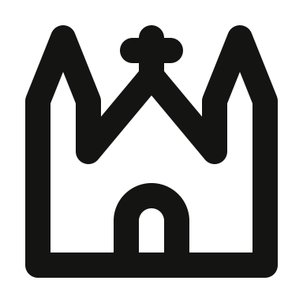
Warning mark added in the previous production fix.

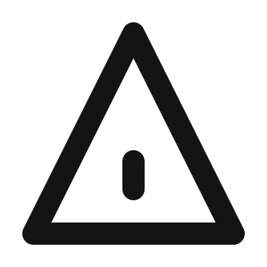
Lengthened the mirrored sight rays while keeping the head silhouette.

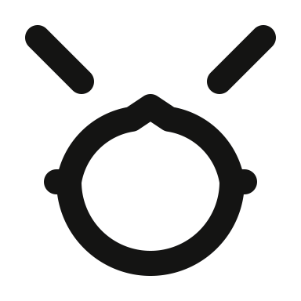
Deepened the heart tip between the opposing profiles.

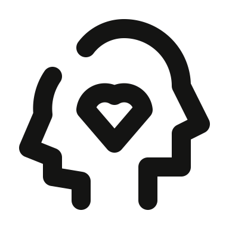
Curved the short cord to follow the source eyeglass loop.

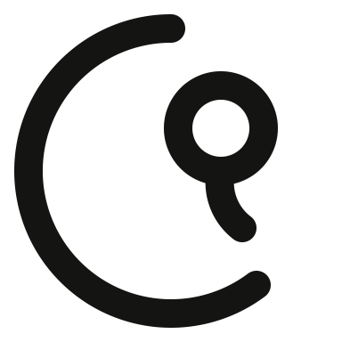
Rebuilt the tail as a narrow neck and clean curved string.

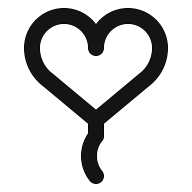
Rebuilt the face as one circle with two compact filled heart eyes and a smile.

Rebuilt three cloud lobes and spread the long diagonal rain strokes.

Enlarged the repeated hexagons and balanced their staggered placement.

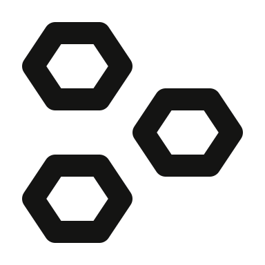
Adjusted the mirrored arch radius to clarify the parent-to-children structure.
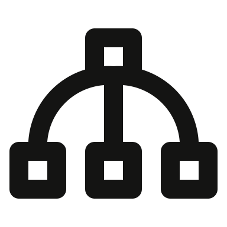
Added one marker for each row and retained the right-hand hierarchy spine.
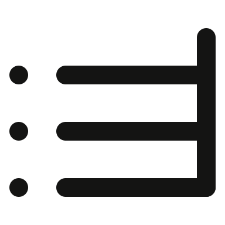